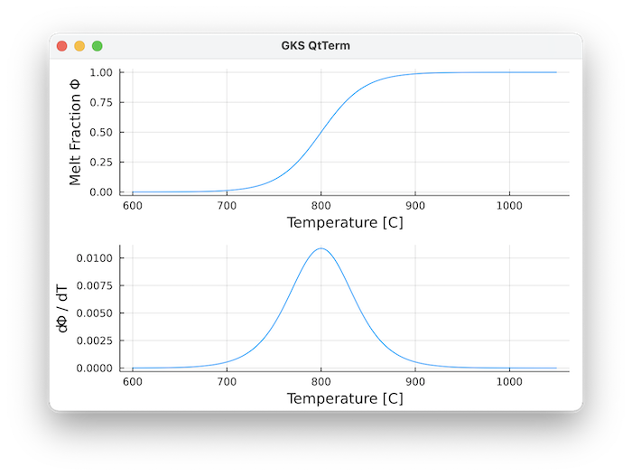
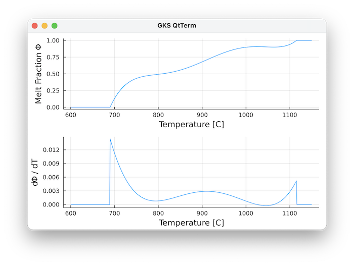
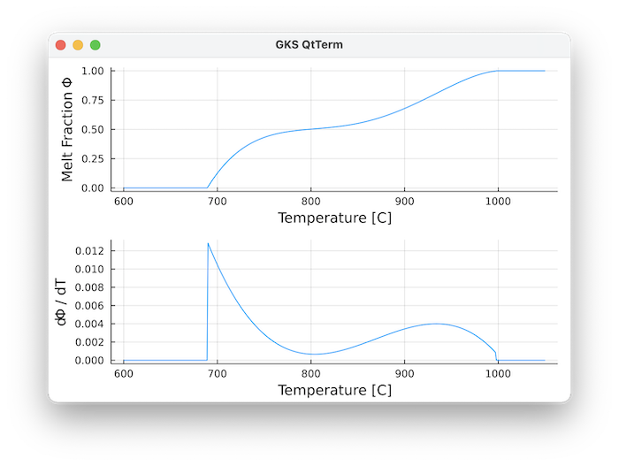
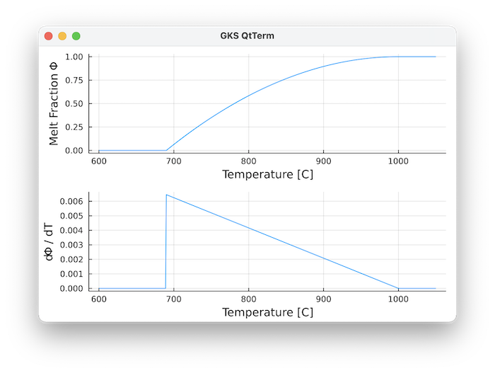
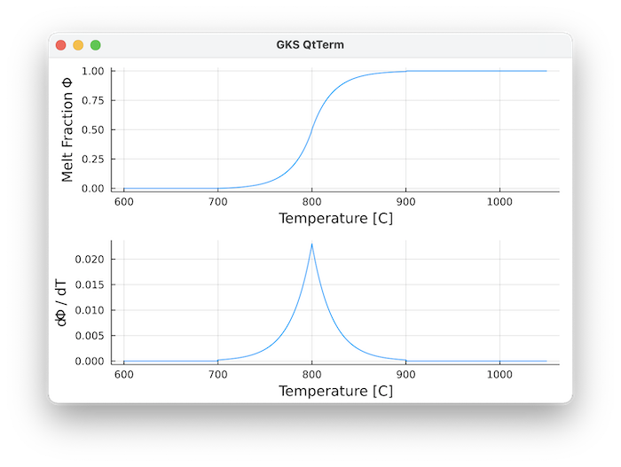
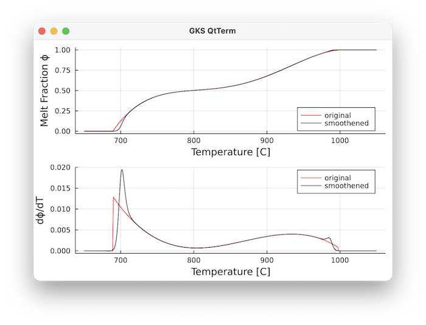

Melting Parameterizations
Methods
A number of melting parameterisations are implemented, which can be set with:
GeoParams.MeltingParam.MeltingParam_Caricchi — TypeMeltingParam_Caricchi()Implements the T-dependent melting parameterisation used by Caricchi, Simpson et al. (as for example described in Simpson)
\[ \theta = {(a - (T + c)) \over b}\]
\[ \phi_{melt} = {1.0 \over (1.0 + e^\theta)}\]
Note that T is in Kelvin. As default parameters we employ:
\[b=23K, a=800K , c=273.15K\]
Which gives a reasonable fit to experimental data of granodioritic composition (Piwinskii and Wyllie, 1968):

References
- Simpson G. (2017) Practical finite element modelling in Earth Sciences Using MATLAB.
GeoParams.MeltingParam.MeltingParam_5thOrder — TypeMeltingParam_5thOrder(a,b,c,d,e,f,T_s,T_l)Uses a 5th order polynomial to describe the melt fraction phi between solidus temperature T_s and liquidus temperature T_l
\[ \phi = a T^5 + b T^4 + c T^3 + d T^2 + e T + f \textrm{ for } T_s ≤ T ≤ T_l\]
\[ \phi = 1 \textrm{ if } T>T_l\]
\[ \phi = 0 \textrm{ if } T<T_s\]
Temperature T is in Kelvin.

The default values are for a composite liquid-line-of-descent:
- the upper part is for Andesite from: (Blatter, D. L. & Carmichael, I. S. (2001) Hydrous phase equilibria of a Mexican highsilica andesite: a candidate for a mantle origin? Geochim. Cosmochim. Acta 65, 4043–4065
- the lower part is extrapolated to the granitic minimum using the Marxer & Ulmer LLD for Andesite (Marxer, F. & Ulmer, P. (2019) Crystallisation and zircon saturation of calc-alkaline tonalite from the Adamello Batholith at upper crustal conditions: an experimental study. Contributions Mineral. Petrol. 174, 84)
GeoParams.MeltingParam.MeltingParam_4thOrder — TypeMeltingParam_4thOrder(b,c,d,e,f,T_s,T_l)Uses a 4th order polynomial to describe the melt fraction phi between solidus temperature T_s and liquidus temperature T_l
\[ \phi = b T^4 + c T^3 + d T^2 + e T + f \textrm{ for } T_s ≤ T ≤ T_l\]
\[ \phi = 1 \textrm{ if } T>T_l\]
\[ \phi = 0 \textrm{ if } T<T_s\]
Temperature T is in Kelvin.

The default values are for Tonalite experiments from Marxer and Ulmer (2019):
- Marxer, F. & Ulmer, P. (2019) Crystallisation and zircon saturation of calc-alkaline tonalite from the Adamello Batholith at upper crustal conditions: an experimental study. Contributions Mineral. Petrol. 174, 84
GeoParams.MeltingParam.MeltingParam_Quadratic — TypeMeltingParam_Quadratic(T_s,T_l)Quadratic melt fraction parameterisation where melt fraction $\phi$ depends only on solidus ($T_s$) and liquidus ($T_l$) temperature:
\[ \phi = 1.0 - \left( {T_l - T} \over {T_l - T_s} \right)^2\]
\[ \phi = 1.0 \textrm{ if } T>T_l\]
\[ \phi = 0.0 \textrm{ if } T<T_s\]
Temperature T is in Kelvin.

This was used, among others, in Tierney et al. (2016) Geology
GeoParams.MeltingParam.MeltingParam_Assimilation — TypeMeltingParam_Assimilation(T_s,T_l,a)Melt fraction parameterisation that takes the assimilation of crustal host rocks into account, as used by Tierney et al. (2016) based upon a parameterisation of Spera and Bohrson (2001)
Here, the fraction of molten and assimilated host rocks $\phi$ depends on the solidus ($T_s$) and liquidus ($T_l$) temperatures of the rocks, as well as on a parameter $a=0.005$
\[ X = \left( {T - T_s} \over {T_l - T_s} \right)\]
\[ \phi = a \cdot \left( \exp^{2ln(100)X} - 1.0 \right) \textrm{ if } X ≤ 0.5\]
\[ \phi = 1- a \cdot \exp^{2ln(100)(1-X)} \textrm{ if } X > 0.5\]
\[ \phi = 1.0 \textrm{ if } T>T_l\]
\[ \phi = 0.0 \textrm{ if } T<T_s\]
Temperature T is in Kelvin.

This was used, among others, in Tierney et al. (2016), who employed as default parameters:
\[ T_s=973.15, T_l=1173.15, a=0.005\]
References
- Spera, F.J., and Bohrson, W.A., 2001, Energy-Constrained Open-System Magmatic Processes I: General Model and Energy-Constrained Assimilation and Fractional Crystallization (EC- AFC) Formulation: Journal of Petrology, v. 42, p. 999–1018.
- Tierney, C.R., Schmitt, A.K., Lovera, O.M., de Silva, S.L., 2016. Voluminous plutonism during volcanic quiescence revealed by thermochemical modeling of zircon. Geology 44, 683–686. https://doi.org/10.1130/G37968.1
GeoParams.MeltingParam.SmoothMelting — TypeSmoothMelting(; p=MeltingParam_4thOrder(), k_sol=0.2/K, k_liq=0.2/K)This smoothens the melting parameterisation $p$ around the solidus $T_{sol}$ and liquidus $T_{liq}$ using a smoothened Heaviside step functions for the solidus:
\[ H_{sol} = {1.0 \over { 1 + \exp( -2 k_{sol} (T - T_{sol} - {2 \over k_{sol}}) ) }}\]
and liquidus:
\[ H_{liq} = 1.0 - {1.0 \over { 1 + \exp( -2 k_{liq} (T - T_{liq} + {2 \over k_{liq}}) ) }}\]
The resulting melt fraction $\phi$ is computed from the original melt fraction $\phi_0$ (computed using one of the methods above) as:
\[ \phi = \phi_0 H_{sol} H_{liq} + 1.0 - H_{liq}\]
The width of the smoothening zones is controlled by $k_{sol}, k_{liq}$ (larger values = sharper boundary).
This is important, as jumps in the derivative $dϕ/dT$ can cause numerical instabilities in latent heat computations, which is prevented with this smoothening.
Example
Let's consider a 4th order parameterisation:
julia> using GLMakie, GeoParams
julia> p = MeltingParam_4thOrder();
julia> T= collect(650.0:1:1050.) .+ 273.15;
julia> T,phi,dϕdT = PlotMeltFraction(p,T=T);The same but with smoothening:
julia> p_s = SmoothMelting(p=MeltingParam_4thOrder(), k_liq=0.21/K);
4th order polynomial melting curve: phi = -7.594512597174117e-10T^4 + 3.469192091489447e-6T^3 + -0.00592352980926T^2 + 4.482855645604745T + -1268.730161921053 963.15 K ≤ T ≤ 1270.15 K with smooth Heaviside function smoothening using k_sol=0.1 K⁻¹·⁰, k_liq=0.11 K⁻¹·⁰
julia> T_s,phi_s,dϕdT_s = PlotMeltFraction(p_s,T=T);We can create plots of this with:
julia> plt1 = plot(T.-273.15, phi, ylabel="Melt Fraction ϕ", color=:red, label="original", xlabel="Temperature [C]")
julia> plt1 = plot(plt1, T.-273.15, phi_s, color=:black, label="smoothened", legend=:bottomright)
julia> plt2 = plot(T.-273.15, dϕdT, ylabel="dϕ/dT", color=:red, label="original", xlabel="Temperature [C]")
julia> plt2 = plot(plt2, T.-273.15, dϕdT_s, color=:black, label="smoothened", legend=:topright)
julia> plot!(plt1,plt2, xlabel="Temperature [C]", layout=(2,1))The derivative no longer has a jump now:

Computational routines
To compute the melt fraction at given T and P, use:
GeoParams.MeltingParam.compute_meltfraction! — Functioncompute_meltfraction!(ϕ::AbstractArray{<:AbstractFloat}, P::AbstractArray{<:AbstractFloat},T:AbstractArray{<:AbstractFloat}, p::PhaseDiagram_LookupTable)In-place computation of melt fraction in case we use a phase diagram lookup table. The table should have the column :meltFrac specified.
compute_meltfraction(ϕ::AbstractArray{<:AbstractFloat}, Phases::AbstractArray{<:Integer}, P::AbstractArray{<:AbstractFloat},T::AbstractArray{<:AbstractFloat}, MatParam::AbstractArray{<:AbstractMaterialParamsStruct})In-place computation of melt fraction ϕ for the whole domain and all phases, in case an array with phase properties MatParam is provided, along with P and T arrays.
GeoParams.MeltingParam.compute_meltfraction — Functioncompute_meltfraction(P,T, p::AbstractPhaseDiagramsStruct)Computes melt fraction in case we use a phase diagram lookup table. The table should have the column :meltFrac specified.
ϕ = compute_meltfraction(Phases::AbstractArray{<:Integer}, P::AbstractArray{<:AbstractFloat},T::AbstractArray{<:AbstractFloat}, MatParam::AbstractArray{<:AbstractMaterialParamsStruct})Computation of melt fraction ϕ for the whole domain and all phases, in case an array with phase properties MatParam is provided, along with P and T arrays.
You can also obtain the derivative of melt fraction versus temperature with (useful to compute latent heat effects):
GeoParams.MeltingParam.compute_dϕdT! — Functioncompute_dϕdT!(ϕ::AbstractArray{<:AbstractFloat}, Phases::AbstractArray{<:Integer}, P::AbstractArray{<:AbstractFloat},T::AbstractArray{<:AbstractFloat}, MatParam::AbstractArray{<:AbstractMaterialParamsStruct})Computates the derivative of melt fraction ϕ versus temperature T, ${\partial \phi} \over {\partial T}$ for the whole domain and all phases, in case an array with phase properties MatParam is provided, along with P and T arrays. This is employed, for example, in computing latent heat terms in an implicit manner.
GeoParams.MeltingParam.compute_dϕdT — Functioncompute_dϕdT(P,T, p::AbstractPhaseDiagramsStruct)Computes derivative of melt fraction vs T in case we use a phase diagram lookup table. The table should have the column :meltFrac specified. The derivative is computed by finite differencing.
ϕ = compute_dϕdT(Phases::AbstractArray{<:Integer}, P::AbstractArray{<:AbstractFloat},T::AbstractArray{<:AbstractFloat}, MatParam::AbstractArray{<:AbstractMaterialParamsStruct})Computates the derivative of melt fraction ϕ versus temperature T for the whole domain and all phases, in case an array with phase properties MatParam is provided, along with P and T arrays. This is employed in computing latent heat terms in an implicit manner, for example
Also note that phase diagrams can be imported using PerpleX_LaMEM_Diagram, which may also have melt content information. The computational routines work with that as well.
Plotting routines
You can use the routine PlotMeltFraction to create a plot, provided that the GLMakie package has been loaded
GeoParams.PlotMeltFraction — FunctionT,phi,plt = PlotMeltFraction(p::AbstractMeltingParam; T=nothing, plt=nothing, lbl=nothing)Creates a plot of temperature T vs. melt fraction, as specified in p. The 1D curve can be evaluated at a specific pressure P which can be given as a scalar or as an array of the same size as T
Optional parameters
T: temperature rangeP: pressureplt: a previously generated plotting objectlbl: label of the curve
Example
julia> p = MeltingParam_Caricchi()
julia> T,phi,dϕdT = PlotMeltFraction(p)you can now save the figure to disk with:
julia> using Plots
julia> savefig(plt,"MeltFraction.png")